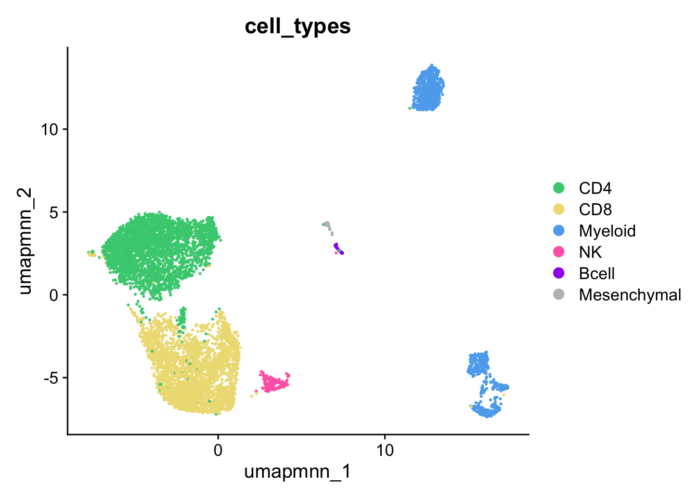

An object of class Seurat
38606 features across 7415 samples within 2 assays
Active assay: RNA (36606 features, 2000 variable features)
9 layers present: counts.BBB2005, counts.BBB2020, counts.BBB2166, counts.BBB2185, data.BBB2005, data.BBB2020, data.BBB2166, data.BBB2185, scale.data
1 other assay present: mnn.reconstructed
4 dimensional reductions calculated: pca, umap.unintegrated, mnn, umap.mnn6.Annotation & Abundance
Annotate Cell Types
DimPlot(FinalFilter, reduction = "umap.mnn", group.by = "mnn_clusters", label = T)
ggsave("plots/2.FastMNN/umap.svg", width = 5, height = 5)
GOI <- c("NCAM1", "KLRD1", "GNLY","CD3E", "CD4", "CD8A", "FOXP3","CD79A", "MS4A1", "IGHM", "C1QA","CD14","HEXB", "CSF1R", "AIF1", "CALD1", "S100A13", "KCNMA1")
DotPlot(FinalFilter, features = GOI) + coord_flip()
ggsave("plots/2.FastMNN/dot.svg", width = 8, height = 5)
# Rename the levels of the factor
FinalFilter$cell_types <- FinalFilter$mnn_clusters
cell_types <- c("CD4", "CD8", "CD8", "Myeloid", "CD8", "CD4", "CD4", "Myeloid", "NK", "Myeloid", "Bcell", "Mesenchymal", "CD8")
levels(FinalFilter@meta.data$cell_types) <- cell_types
table(FinalFilter$cell_types)
CD4 CD8 Myeloid NK Bcell Mesenchymal
3148 2938 1079 156 53 41 #Visualize
DimPlot(FinalFilter, reduction = "umap.mnn", group.by = "cell_types", cols = c("seagreen3", "lightgoldenrod", "steelblue2","hotpink", "purple", "grey"))
ggsave("plots/3.clusters/umap.svg", width = 6, height = 5)CellType Abundance
tmp <-table(FinalFilter$cell_types)
round(prop.table(tmp)*100,1)
CD4 CD8 Myeloid NK Bcell Mesenchymal
42.5 39.6 14.6 2.1 0.7 0.6 table(FinalFilter$cell_types, FinalFilter$ID)
BBB2005 BBB2020 BBB2166 BBB2185
CD4 164 1415 1454 115
CD8 335 1324 1108 171
Myeloid 58 166 235 620
NK 36 70 41 9
Bcell 5 20 28 0
Mesenchymal 3 6 5 27tmp <-table(FinalFilter$cell_types, FinalFilter$ID)
round(prop.table(tmp, margin = 2)*100,1)
BBB2005 BBB2020 BBB2166 BBB2185
CD4 27.3 47.2 50.6 12.2
CD8 55.7 44.1 38.6 18.2
Myeloid 9.7 5.5 8.2 65.8
NK 6.0 2.3 1.4 1.0
Bcell 0.8 0.7 1.0 0.0
Mesenchymal 0.5 0.2 0.2 2.9abundance <- as.data.frame(round(prop.table(tmp, margin = 2)*100,1))
colnames(abundance) <- c("celltype", "ID", "Freq")
ggplot(abundance, aes(fill=celltype, y=Freq, x=ID)) +
geom_bar(position="stack", stat="identity") + theme_cowplot() +
scale_fill_manual(values = c("steelblue2", "lightgoldenrod","seagreen3","hotpink", "purple", "grey"))
ggsave("plots/3.clusters/stackedbar.svg", width = 5, height = 6)save(FinalFilter, file = "data/6.annotated.rda")TidyDat <- JoinLayers(FinalFilter)
TidyDatAn object of class Seurat
38606 features across 7415 samples within 2 assays
Active assay: RNA (36606 features, 2000 variable features)
3 layers present: data, counts, scale.data
1 other assay present: mnn.reconstructed
4 dimensional reductions calculated: pca, umap.unintegrated, mnn, umap.mnnIdentify celltype enriched genes
Idents(TidyDat) <- TidyDat$cell_types
cluster_markers <- FindAllMarkers(TidyDat,
logfc.threshold = 0.5,
test.use = "roc",
min.pct = 0.25,
only.pos = TRUE)Calculating cluster CD4Calculating cluster CD8Calculating cluster MyeloidCalculating cluster NKCalculating cluster BcellCalculating cluster Mesenchymaltable(cluster_markers$cluster, dnn = "roc")roc
CD4 CD8 Myeloid NK Bcell Mesenchymal
16 30 82 56 243 24 write.csv(cluster_markers, file = "writes/cluster_markers_roc_251124.csv")Heatmap
# Manually curate a list of top cluster marker genes
heatmap_genes <- read.csv("writes/cluster_markers_roc_heatmap.csv")
GOI <- heatmap_genes$gene
TidyDat <- ScaleData(TidyDat, features = GOI)Centering and scaling data matrixWarning: Different features in new layer data than already exists for
scale.dataDotPlot(TidyDat, features = GOI, cols = c("gray90", "black"), group.by = "cell_types") + coord_flip() +
scale_color_gradient2(
low = "white", # color for lowest (negative)
mid = "white", # color for zero
high = "black", # color for highest (positive)
midpoint = 0, # where 0 maps to mid color
limits = c(-1,2.5))Warning: The following requested variables were not found: NKG71Scale for colour is already present.
Adding another scale for colour, which will replace the existing scale.
ggsave("plots/3.clusters/cluster_heatmap.svg", width = 7, height = 12)save(TidyDat, file = "data/7.TidyData.rda")sessionInfo()R version 4.4.1 (2024-06-14)
Platform: aarch64-apple-darwin20
Running under: macOS Sonoma 14.5
Matrix products: default
BLAS: /Library/Frameworks/R.framework/Versions/4.4-arm64/Resources/lib/libRblas.0.dylib
LAPACK: /Library/Frameworks/R.framework/Versions/4.4-arm64/Resources/lib/libRlapack.dylib; LAPACK version 3.12.0
locale:
[1] en_US.UTF-8/en_US.UTF-8/en_US.UTF-8/C/en_US.UTF-8/en_US.UTF-8
time zone: America/Chicago
tzcode source: internal
attached base packages:
[1] stats graphics grDevices utils datasets methods base
other attached packages:
[1] dplyr_1.1.4 cowplot_1.1.3 ggplot2_3.5.2 Seurat_5.2.1
[5] SeuratObject_5.0.2 sp_2.1-4
loaded via a namespace (and not attached):
[1] deldir_2.0-4 pbapply_1.7-2 gridExtra_2.3
[4] rlang_1.1.6 magrittr_2.0.3 RcppAnnoy_0.0.22
[7] spatstat.geom_3.3-5 matrixStats_1.5.0 ggridges_0.5.6
[10] compiler_4.4.1 systemfonts_1.2.1 png_0.1-8
[13] vctrs_0.6.5 reshape2_1.4.4 stringr_1.5.1
[16] pkgconfig_2.0.3 fastmap_1.2.0 labeling_0.4.3
[19] promises_1.3.3 rmarkdown_2.29 ragg_1.3.3
[22] purrr_1.0.4 xfun_0.52 jsonlite_2.0.0
[25] goftest_1.2-3 later_1.4.2 spatstat.utils_3.1-2
[28] irlba_2.3.5.1 parallel_4.4.1 cluster_2.1.8
[31] R6_2.6.1 ica_1.0-3 stringi_1.8.4
[34] RColorBrewer_1.1-3 spatstat.data_3.1-4 reticulate_1.42.0
[37] parallelly_1.45.0 spatstat.univar_3.1-1 lmtest_0.9-40
[40] scattermore_1.2 Rcpp_1.0.14 knitr_1.50
[43] tensor_1.5 future.apply_1.11.3 zoo_1.8-12
[46] sctransform_0.4.1 httpuv_1.6.16 Matrix_1.7-2
[49] splines_4.4.1 igraph_2.1.4 tidyselect_1.2.1
[52] rstudioapi_0.17.1 abind_1.4-8 yaml_2.3.10
[55] spatstat.random_3.3-2 codetools_0.2-20 miniUI_0.1.1.1
[58] spatstat.explore_3.3-4 listenv_0.9.1 lattice_0.22-6
[61] tibble_3.2.1 plyr_1.8.9 withr_3.0.2
[64] shiny_1.10.0 ROCR_1.0-11 evaluate_1.0.4
[67] Rtsne_0.17 future_1.49.0 fastDummies_1.7.5
[70] survival_3.8-3 polyclip_1.10-7 fitdistrplus_1.2-2
[73] pillar_1.10.1 KernSmooth_2.23-26 plotly_4.10.4
[76] generics_0.1.3 RcppHNSW_0.6.0 munsell_0.5.1
[79] scales_1.3.0 globals_0.18.0 xtable_1.8-4
[82] glue_1.8.0 lazyeval_0.2.2 tools_4.4.1
[85] data.table_1.17.0 RSpectra_0.16-2 RANN_2.6.2
[88] dotCall64_1.2 grid_4.4.1 tidyr_1.3.1
[91] colorspace_2.1-1 nlme_3.1-167 patchwork_1.3.0
[94] cli_3.6.5 spatstat.sparse_3.1-0 textshaping_1.0.0
[97] spam_2.11-1 viridisLite_0.4.2 svglite_2.1.3
[100] uwot_0.2.2 gtable_0.3.6 digest_0.6.37
[103] progressr_0.15.1 ggrepel_0.9.6 htmlwidgets_1.6.4
[106] farver_2.1.2 htmltools_0.5.8.1 lifecycle_1.0.4
[109] httr_1.4.7 mime_0.13 MASS_7.3-64